Designing a PCB for DAP-R
This week we were tasked to design a PCB using one of the tools that we were described in class. Originally I wanted to use Eagle because of its integration with Fusion, however, my PC just refused to open Eagle no matter what I did. So I moved onto KiCAD! To be able to design any circuit you need to know what your inputs and outputs are and how to be able to control them. So I started by breaking down the components I needed for my board.
- Inputs
- Distance Sensor (make sure robot doesn't fall off of table)
- Camera Sensor (robot sees face - robot responds with emotes)
- Outputs
- Servos x2
- Motors x2
- Screen (for the robot to emote)
With all of this I was able to break down how many pins and leads I would need for my circuit to work. But the first thing I noticed was that there was an easier board to use to incorporate cameras to my system:
The ESP32 SEEED Sense

This board has the same exact footprint as the SEEED XIAO RP2040 except it has a different chip driving it. It also has a expansion board that adds two additional pins to work with as well as a camera.
Organizing the Board
Next I had to see if the pin outs would work for the idea that I had. Luckily they did! Or at least for a prototype. So I set my board up something like this:
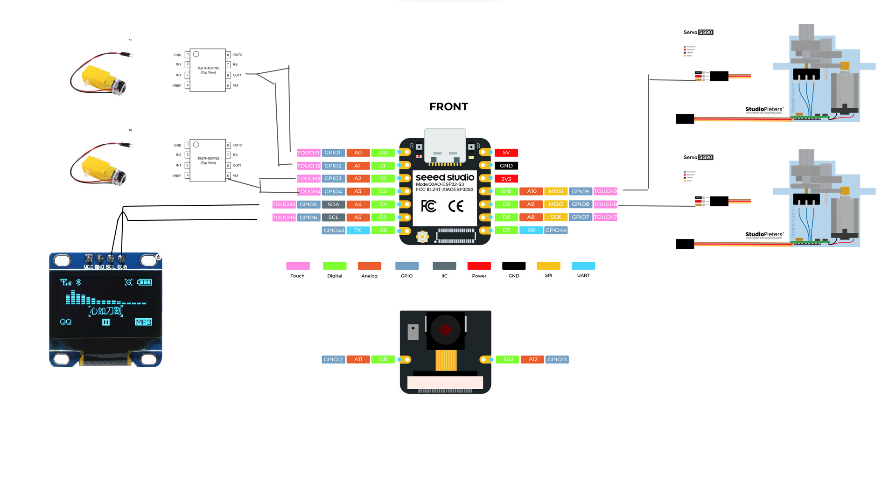So having this layout I need to set up a board on KiCAD. I had never used KiCAD before so I did what anyone would do, I looked up a YouTube Video to walk me through the process. Specifically the video below:
In short the video breaks up KiCAD into four stages:
- Set up Schematic
- Set up Footprints
- Board Check
- Connect leads on PCB
I played around with KiCAD a bit making boards with my students but unfortunately I did not track that work. Then I got to work on my personal circuit board. But first I had to do some preliminary steps to make my job a little easier. Specifically setting up my KiCAD to have the libararies that contain all the parts we were told to purchase for the Academy.
Installing the Fab Academy Libraries
Step One: Download the Libraries
The libraries of footprints and components are located here
It will open up a GitLab page like below:
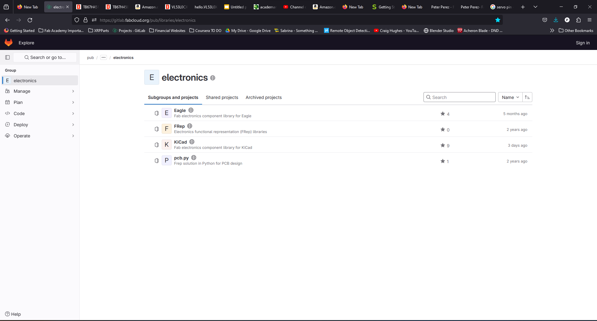You then click on the KiCAD library and go to the blue box that says "code" and download the .zip file there
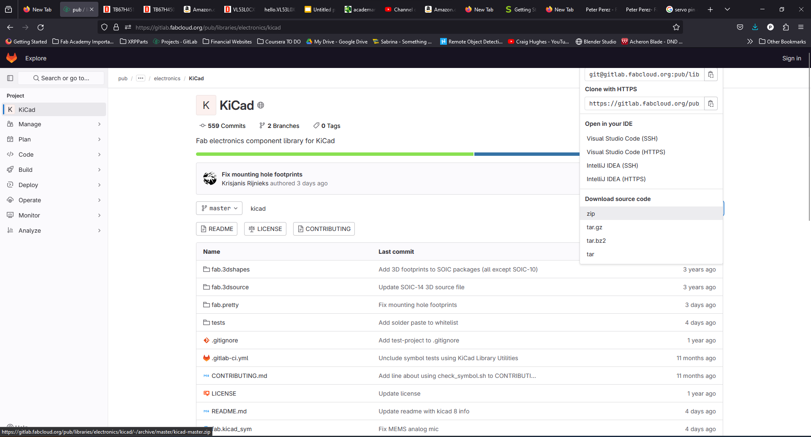Step Two: Install into KiCAD
This part is pretty simple you just install the files to two separate directories in KiCAD.
A quick tutorial on how to install the Fab Academy libraries:
Finding my components
Once the fab libraries are installed in the KiCAD system you can pull on all of the components that we were told to purchase for our labs. This creates a great balance for two reasons. One, I can be sure I am using the same component with the same footprint as the one that I am purchasing. And the datasheets are the ones that match the ones in the system so I can use them to figure out what the pinouts and footprints are.
To find these we can easily do this by following a few steps
- Click on add schematic to board
- In the search bar, type in "fab"
- If you are looking for a specific component make sure you type in the information for what you need, ex: SEEED
- Protip: SMD means surface mount, THT means through hole
- Finally click add symbol to schematic
.png)
.png)
.png)
.png)
Once you do this, you add all the components you need to your board and it should look something like this:
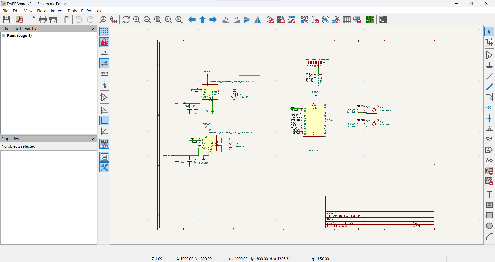Connecting the Components
After this the next step is to get all of your components together and connecting them to the right pins so that they may interact with each other properly. In my opinion, this is the hardest part because it will make a mess if you do not do it properly. The trick is, use labels! Labels create a tag that allows the circuit to link one location to the other in KiCAD
But Peter, how do I do this?
- How to connect components in the schematic:
- Press "L" on your keyboard to open up the label menu
- Type in the name of the new label you are using
- Connect this to the pin that you will be using for that component
- Copy Paste the same label to the other component that will be connected to that point
.png)
.png)
.png)
.png)
Here you can see this example using the labels SERVO1 and SERVO2
Finally making the actual schematic:
Step One: Electronics Check
On the top of the KiCAD menu there is a little button that is like a checklist. This does the electronics rule check. It will make sure you have connected everything you need to.
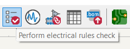If you have a few errors, the biggest error that I had was having parts of the board not connected to anything. To fix this you use the no connections flag.
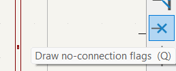You can see this in pin 3 here:
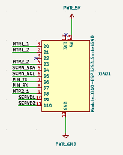Importing Components
The next step is to click on the board editor button it will open up another blank window, but do not panic.
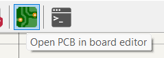To bring in all of your component you click on the "Update PCB with changes made to schematic"
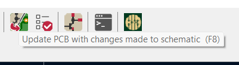The next step is to spread out all of the components how you want them arranged in the editor. Make you you place them where they need to go geographically on your board
Connecting traces
Afer you have completed the process of putting your boards out, you have to connect all the boards together. Luckily kiCAD helps by creating a "rats nest" of cables all connected to each other that lets you know which pin should be connected to what. YOu may have to do some tweaking here to help you have things match up and rotate a few components to be able to get everything on one layer for milling. If you are sending things out to a PCB house you can use two or more layers more easily!
Freerouting plugin
I got a headache doing the connections, so I did what any good maker does. Google to see if someone made our lives easier. And someone did. There is a plugin called freerouter that allows you to do this. It is simple to install and all you have to do is follow steps on the GitHub.
Once you do this it opens up a new function in plugins and tools in KiCAD
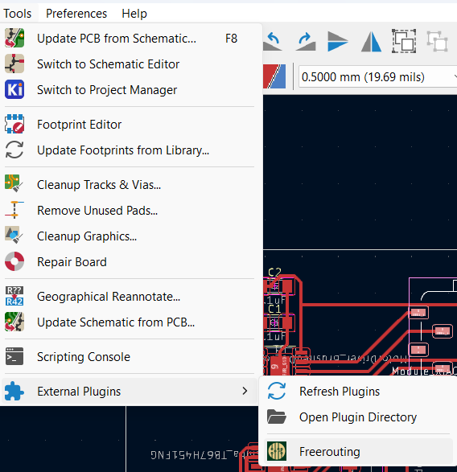Clicking this button allows you to actually have this automatically have the system choose where to put the routes. You have to check on them to be sure that the system did not make something on incorrect layers but once that is done you can get a really pretty board like this:
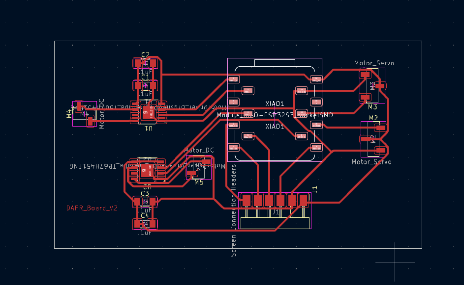